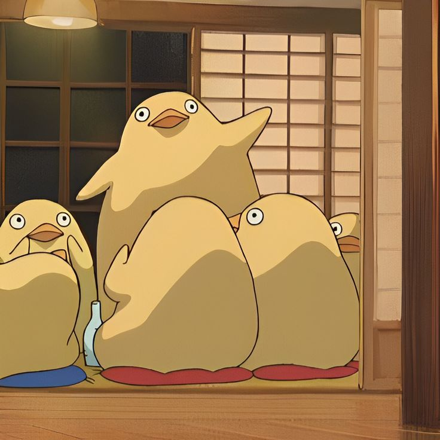
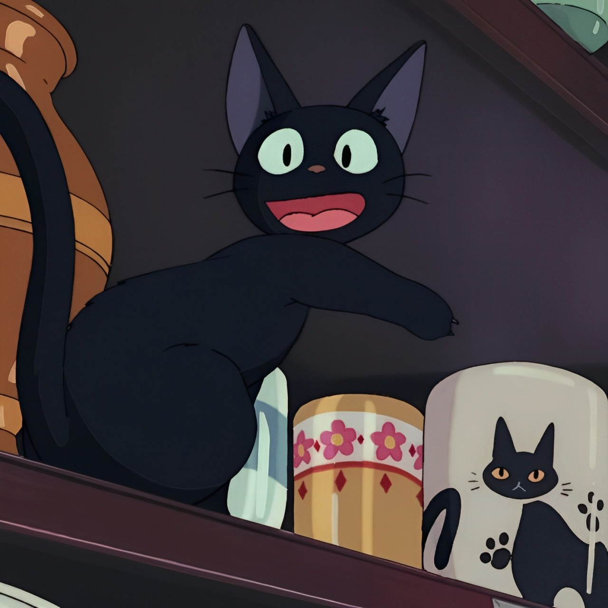
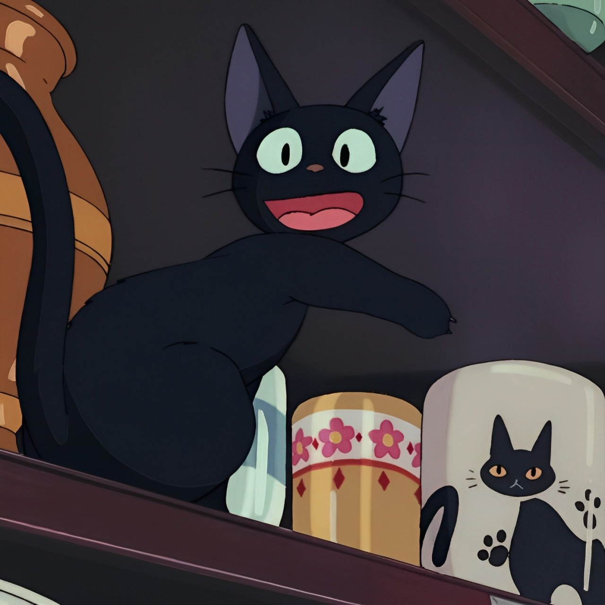
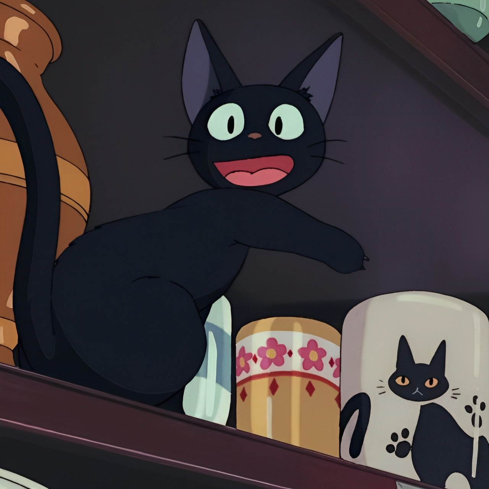
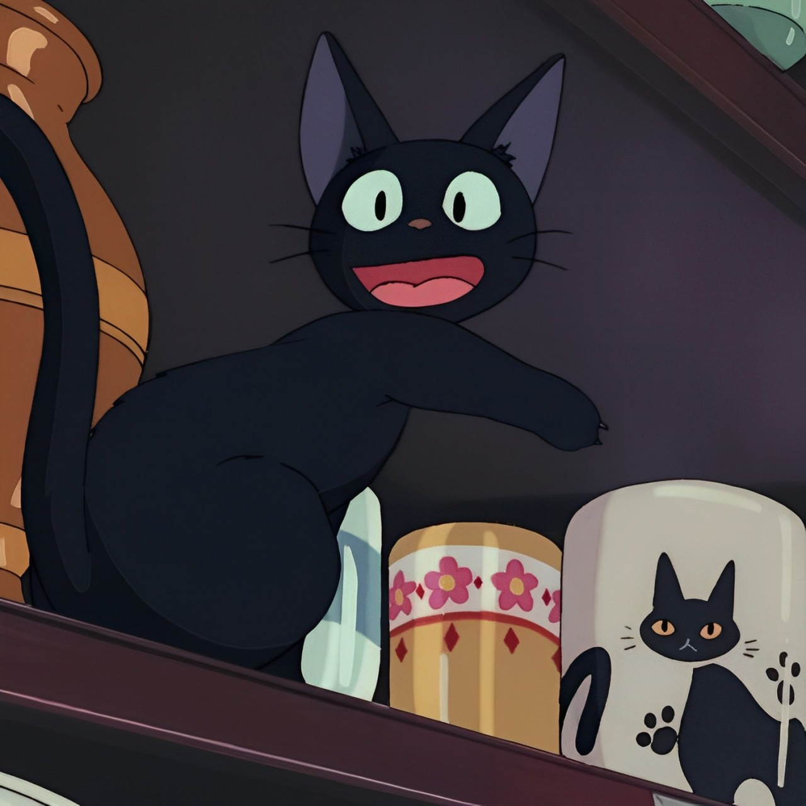

Play our simple memory game!

 


Doing things that help you stay mentally healthy
As expected, caring for your mind is essentially what matters
when improving your mental wellness.
However, many struggle
to care for themselves, as they either do not have the time
to care for themselves, or they don't take the effort to.
Some would also feel overwhelmed by the negative thoughts
and emotions they have in them, thus feel unworthy of such care.
Here are some tips, tricks and a lil insider hint on how to get your "Cool" on
Through meditation, you would feel more relaxed and at ease,
and be able to cope with your stress. It can also help you stay centred
and find inner peace yourself, benefitting you in the long-run.
For more tips on how to meditate, you can go to calm.com
or use to calm app for step by step guides to mediatation!
Doing yoga can greatly help you make better decisions,
increases your concentration and focus and improves your overall mood!
Moreover, it has been proven that doing yoga helps to prevent the decline
in your memory and cognitive skills as you grow older.
For beginners, here are some YouTube videos you can refer to!
Playing video games provides us with mental stimulation to
think more strategically and it builds up our emotional resilience.
Not only do they challenge our mind and improve our perservearance,
but it also boosts our overall mood and helps us in regualting
our emotions to cope with our stress!
Here are some recommended video games that help to relieve stress!
Animal Crossing: New Horizons
Genshin Impact
Journey
The Witness
Inside
Tetris
Play our simple memory game!

Journalling your thoughts and feelings helps you to self-reflect and
prioritize your problems and concerns. Its also an opportunity for you to
identify negative thoughts and behaviours you have,
which can help you change your ways in the future.
When you pick up a hobby that you love and enjoy doing, you will tend to feel
more relaxed and at ease, forgetting all the negative thoughts
and worries you may have had.
Not sure what hobby suits you? We've got you covered
| Artistic | Sporty | Others |
|---|---|---|
| Playing music | Running | Reading |
| Crocheting | Chess | Playing board games |
| Painting | Cycling | Cooking |
Listening to music helps to reduce anxiety, improves sleep quality,
mood, mental alertness and memory.
It also boosts creativity and motivation levels,
and reduces symptoms of depression as well.
Here are some music artists we at MindYourCool personally recommend for you!
Seasons
Wave to Earth
Saturn
SZA
BIRDS OF A FEATHER
Billie Eilish
Bags
Clairo
Style
Taylor Swift